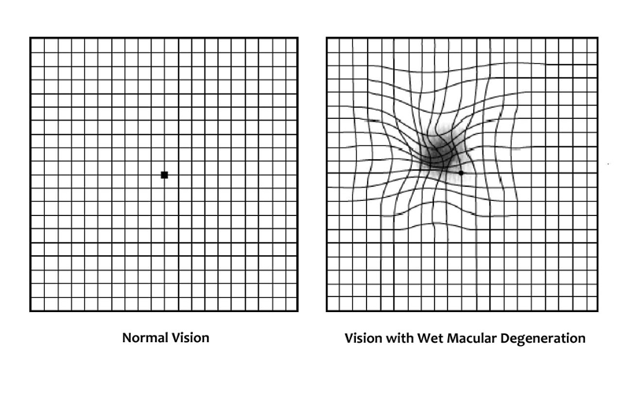
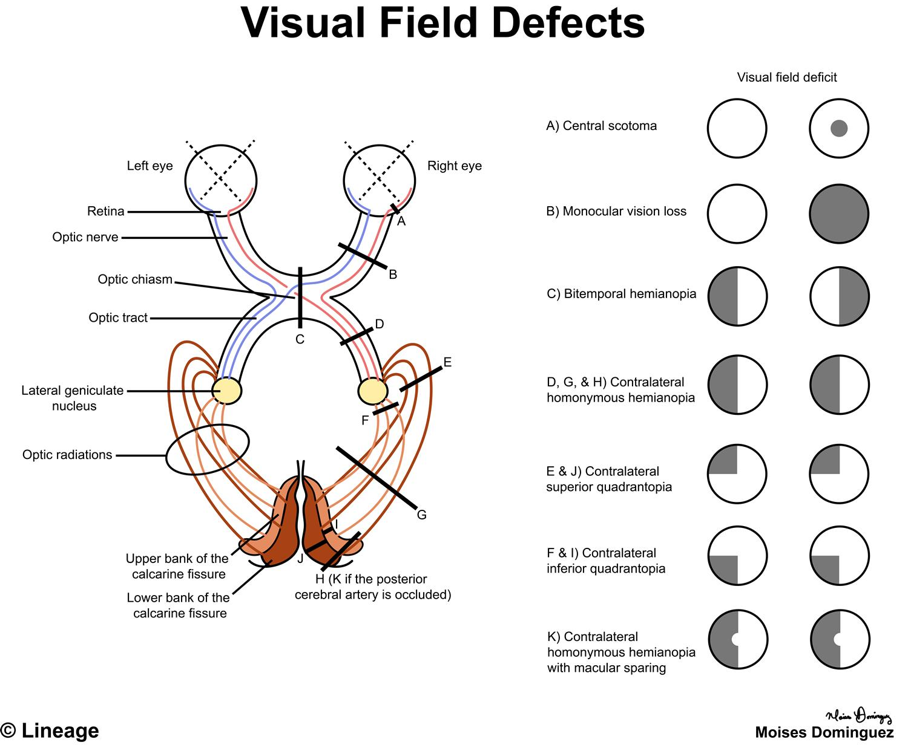
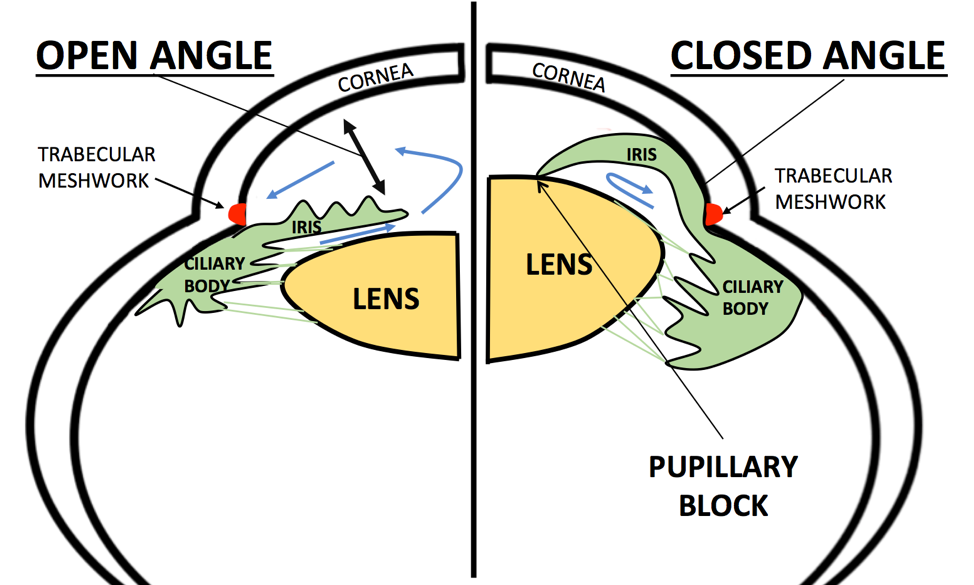
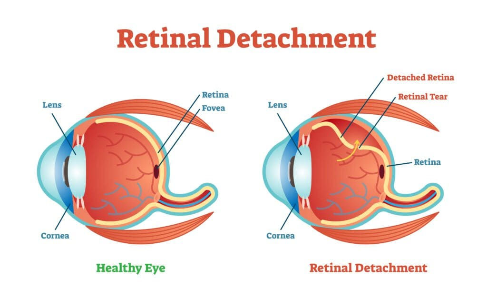

Resources
Key diagrams to support spot diagnosis.




Reference sources used across this site
These are the main educational resources and reference sites that informed the content, explanations and diagrams used throughout OphthoLearn.
- Kanski’s Clinical Ophthalmology – NCBI Bookshelf
- Mayo Clinic – Eye and Vision Conditions
- EyeWiki
- Royal College of Ophthalmologists
- NHS Health A-Z – Eye and vision conditions
- American Academy of Ophthalmology (AAO)
- RNIB
- UpToDate
- BMJ
- NICE Guidance
- Patient.info – Eyes and Vision
- Karger / ophthalmology review articles
- PubMed Central (PMC)
- American Academy of Ophthalmology Education Portal
- OSCE Home